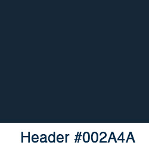
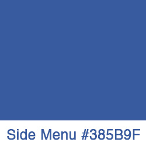
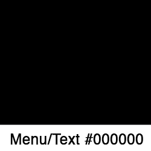
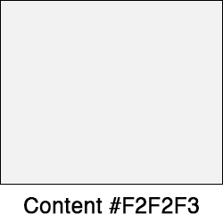
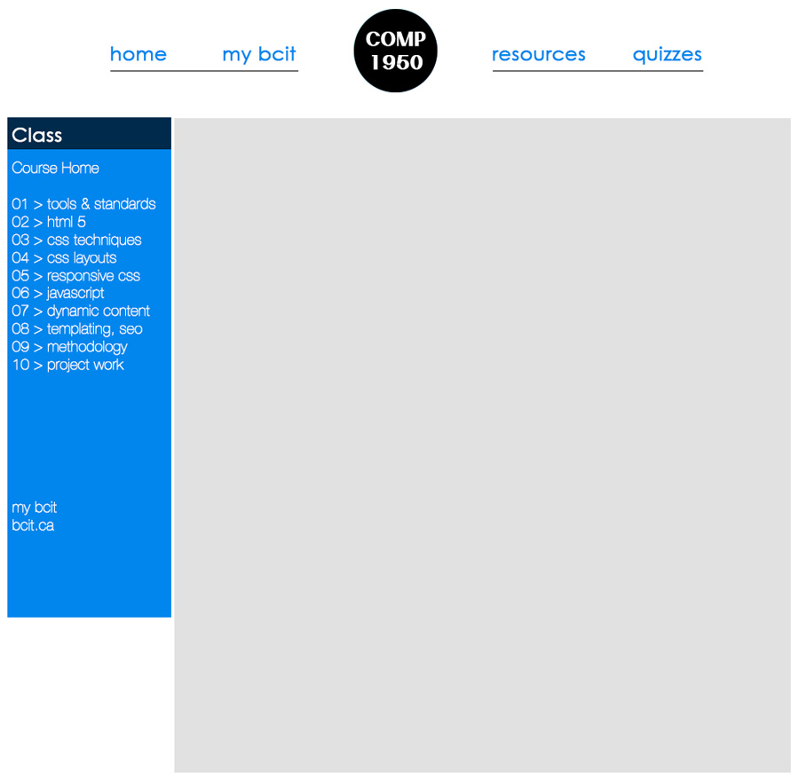

This document details our process, design decisions, and their reasons.
Prior to beginning our site redesign, we asked our client to complete our project questionnaire and conducted a usability study of the current site and looked at the sites of BCIT’s competitors (Langara College, Capilano College, MIT, and UBC). We had four users of the current COMP1950 website list what they liked and did not like about the website (see table 1). Their feedback guided our design to the prototype site.
| PROS | CONS |
|---|---|
|
|
Based upon this feedback, we focused our redesign on the navigation and information architecture rather than the aesthetics of the course site. Our examination of competitor sites also showed similar aesthetic decisions (minimal colour schemes, high-contrast designs, etc.), which supports our decision to focus on navigation and information architecture.
A core principle in information architecture is cognitive load which refers to the amount of mental effort required to perform a task. Since studying is a mentally intensive process to begin with, a website should be simple and elegant in order to minimize the load placed upon users. For this reason, we choose a very simple design, employing few colours or graphics. We also kept our navigation simple and consistent so that users would always know where they are within the site.
One could argue that this site, which teaches the latest techniques in HTML5 and CSS3, should employ as many of the techniques taught in the course as possible. We disagree with this opinion. While it is important that the content of this site covers such material, it is our professional philosophy that all design decisions should communicate or enhance the site’s message without being a distraction. It is sufficient that the content links to external sites which can demonstrate individual techniques and/or features.
We have compiled a list of resources to aid in the development of your websites. We have broken them down into the following categories:
|  |  |
|  |  |
We originally had 3 design/layout mockups for our proto-site. We all decided on going with the third mockup as a guide for our final design
We used Verdana sans-serif font for our menus and body text. For the headers, we used Sneakers Pro Narrow
This is a list of the features and functions of the site redesign and their corresponding rationale.
Global navigation: this is a site-wide horizontal navigation bar which appears at the top of every page within the prototype site. In addition to displaying the site name, four primary links are shown: Home, myBCIT, Resources, and Quizzes.
Local navigation: this is a vertical navigation area which only appears on lecture pages. This navigation area displays each lecture and has nested navigation displaying the section heading for each lecture. This addresses the biggest complaint we received during our usability testing: users must scroll through long pages to find specific information.
We have designed this site to display dynamic content, meaning that the display of content will change depending upon the screen size being used to view it.
Large: we focused on large screens with a width of 1024px or more.
Mobile: we have provided a second stylesheet and layout for screens with a width of less than 1024px. As most notebooks and desktops now have displays of 1024px or greater, this display is primarily intended for tablets.
Smartphonessince this was not a specified design requirement, we chose not to develop a display for smartphones as this display size is not conducive to prolonged, focused reading. However, our use of flexible box layout provides us with the means of easily creating a smartphone display should our client require this in the future.
Overhead: as required by our client, we have provided a stylesheet that presents a simplified layout with larger text suited for an overhead display.
Print: required by our client, we have provided a print stylesheet which removes all unnecessary page elements (e.g. navigation and top of page links) and shows urls for all links contained with the page.
Flexible box layout: this feature allows different elements (divs) of a page to act as columns or rows. This feature is particularly useful in designing dynamic sites which can respond to and alter their layout according to different screen sizes.
Sticky: we used the sticky plugin (http://stickyjs.com/) to fix our navigation areas in place.
This section was not a requirement of our client; however, our client expressed a desire to be able to post class quizzes to the course website. Since this issue came up during our initial user assessment and we possess the technical knowledge, we chose to implement our client’s request.
We used PHP scripts to control the behaviour of these pages. When a user clicks on the Quizzes link in the global navigation bar, she is taken to a login screen where she is prompted to enter her name and a password (BCIT student number). If this information is successfully entered, she is welcomed and shown a quiz start button. Once clicked, the user is taken to a page displaying the current week’s quiz. A timer is also set (are prototype is set to expire after 5 minutes). Once she has answered all of the questions, she can click a submit button. If her time has expired, she is shown a message to this effect. Otherwise, she is shown a message saying that her test has been successfully submitted and she is asked to logout. The user’s name, student number, the questions, and the user’s answers are written to a text file which the instructor can access for marking.
We used PHP programming for this section because it is necessary to use a server-side scripting language to record our user’s answers to a file located on the course server. Other server-side scripting languages could have been used, but PHP is an industry standard.
Note: the input fields for the quiz have been properly sanitized to prevent malicious users from launching attacks on the course website.
Search Engine Optimization or SEO is the process of designing pages semantically according to a set of best practices, so that search engines can find and accurately index the pages of a site. The following list details the SEO practices we employed on this site.
Disallowing SEO: We used SEO on almost every page of our site. In the case of the quiz pages, SEO is limited to telling web crawlers to not index these pages in order to discourage students and visitors from accessing them.
Meta Tag Descriptions: Each page has a meta tag description which summarizes the content of the page. This description helps people find this page using search engines by displaying the description in the search results.
Page Titles: Pages titles not only provide a description of this current page, but also indicate the hierarchical location of the page. Titles use this convention: Institute: Course: Page or BCIT: COMP1950: Resources.
URLs: URLs consist of words which are reflective of the page’s contents (often the final part of the page title) and when appropriate, show hierarchies. This provides meaning to indexers and is easier for users to remember.
Captioning: Tables and images are captioned in order to provide semantic value to these features.
Search Engines: As a service, when the production site is launched, we will submit the site to search engines to guarantee prompt indexing.